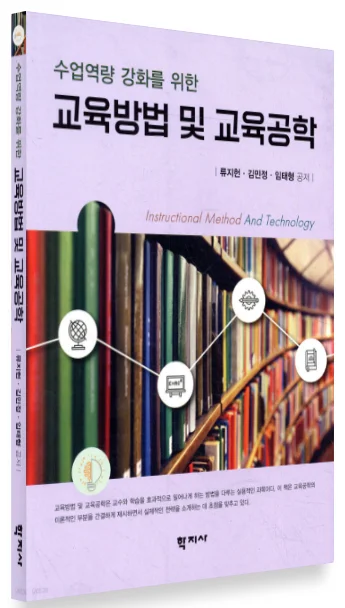
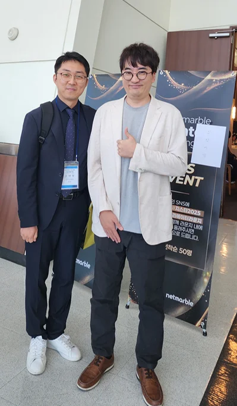
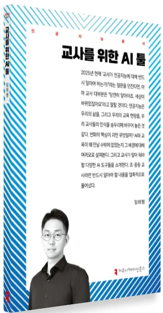
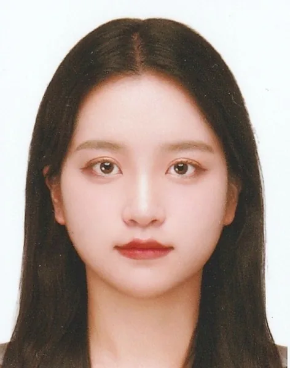
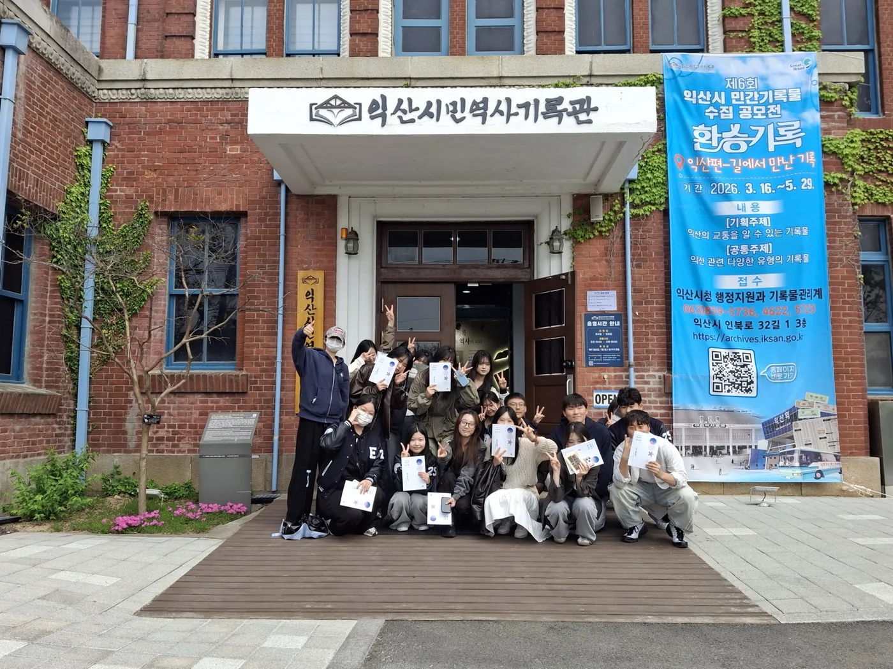
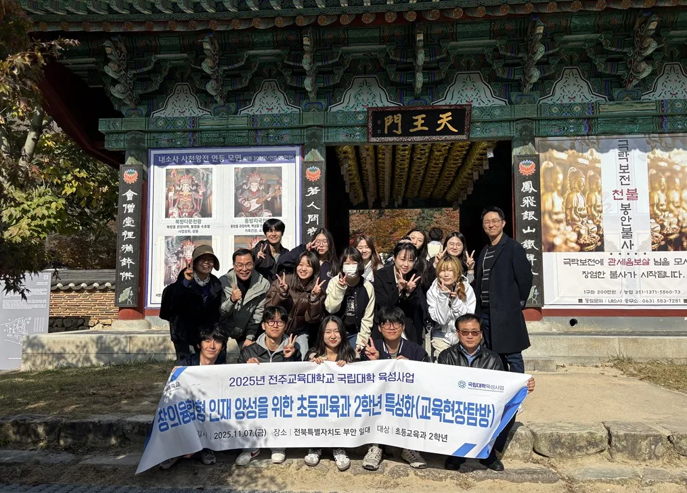

정통 교육공학자
- 미국 플로리다주립대 교육공학 박사(Ph.D.)
- 『수업역량 강화를 위한 교육방법 및 교육공학』(2023) 공저
- 한국교육공학회·한국교육정보미디어학회 이사
- 2023 한국교육정보미디어학회 차세대연구자상, 미국교육공학회 LED 우수 논문상
- 「수업분석 및 비평」(2학년 전공심화), 「교육방법 및 교육공학」(4학년 교직선택) 담당

전주교육대학교 초등교육과
교육의 본질을 탐구하고 실천하는 교사
한 명 한 명,
제가 챙기겠습니다.학과장 임태형
↓ 아래로 넘기기 (발표: → 또는 Space · F 전체화면)
교육공학을 바탕으로 e스포츠와 AI까지, 교육을 두루 탐구합니다.



초등교육과에 오면 '무엇을 가르칠까'와 함께 '왜 가르치는가'를 늘 묻게 됩니다. 교육철학부터 교육공학까지 아홉 분야의 교수 아홉 명이 수업과 아이와 학교를 각자의 눈으로 함께 들여다봅니다.
수업을 보는 눈, 모든 아이의 성장을 돕는 힘, 동료와 함께 학교를 바꾸는 리더십. 어떤 교과를 가르치든 교사라면 매일 쓰는 힘입니다. 자기 수업에 '왜'를 묻고 싶은 학생, 아이의 마음이 궁금한 학생이라면 초등교육과가 잘 맞을 겁니다.
심화과정 선택을 두고 고민이 된다면 언제든 학과장인 저를 찾아 주세요. 초등교육과에서 기다리겠습니다.
학과장 임태형
초등교육과는 교육의 본질을 탐구하고 실천하는 교사를 기릅니다.
초등교사가 마주하는 다섯 가지 질문을 아홉 분야 교수진과 탐구합니다.
필수 6과목 + 선택 3과목(각 택1). 과목을 누르면 설명이 열립니다.
내 수업을 직접 설계해 실연하고, 수업 영상을 데이터와 AI 도구로 분석해 고쳐 봅니다.
교사가 학부모와 어떻게 만나고 함께 아이를 키울지 배웁니다. 매주 반성적 저널을 쓰고 토론하며 학부모교육 프로그램을 직접 구상해 봅니다.
리더십 이론을 학교 현장에 적용해 봅니다. 교실과 학교의 변화를 이끄는 교사는 어떤 사람인지 토론과 협동학습으로 탐구합니다.
읽기·쓰기·수학에서 어려움을 겪는 학습장애·학습부진 학생과 경계선 지능 학생의 특성을 이해하고, 이들을 위한 수업 전략과 정서·사회성 지원 방법을 배웁니다.
정서·행동장애 학생과 정서·행동 문제를 보이는 학생의 특성을 이해하고 정서 지원과 행동 관리 방법을 배웁니다. 가정·학급·학교가 함께하는 지원 계획을 세워 봅니다.
20세기 교육사조와 포스트모더니즘 등 현대 사상이 '가르침'을 어떻게 바꿔 놓았는지 살핍니다. 영상과 토론으로 내 교육관을 세워 봅니다.
초등 현장에서 쓰는 심리검사의 기본 개념과 종류를 배우고, 직접 실시하고 해석해 봅니다. 아이를 숫자 너머로 읽는 눈을 기릅니다.
집단상담의 원리와 기술을 익히고, 학급 단위 집단 역동을 활용해 아이들의 성장을 돕는 프로그램을 설계합니다.
성취기준에서 출발해 수업을 설계하고 과정중심평가까지 한 줄로 잇는 연습을 합니다. 임용 후 바로 쓰는 수업 설계의 핵심 기술입니다.
지금 우리나라와 세계의 교육개혁이 어디로 가는지 읽고, 교사가 개혁의 주체로 참여하려면 무엇이 필요한지 토론합니다.
영재성 이론과 영재학생의 특성, 판별 방법을 배우고 심화학습·속진·차별화 수업처럼 아이의 재능을 키우는 수업 방법을 익힙니다.
아이가 스스로 공부하게 만드는 힘인 학습동기와 자기조절학습을 배웁니다. 동기와 자기조절 능력을 진단하고 이를 키우는 수업·지도 전략을 설계해 봅니다.
4학년 졸업논문은 지도교수와 함께 쓰는 개인 논문 · 2026학년도 신입생 적용 교육과정(2026. 9. 9. 확정) 기준
연구실은 모두 교육문화관 1·2층. 복도에서 만나면 인사해 주세요.


먼저 초등교육과를 고른 선배 세 사람이 들려 주는 이야기.

"초등교육이라는 숲 전체가 궁금하다면 초등교육과에서 만나요."
체육 같은 예체능 심화와 초등교육과 사이에서 오래 고민했습니다. 초등 교실에서는 한 과목을 깊이 아는 것보다 여러 과목을 하나로 엮어 가르치는 힘이 더 필요하다고 생각해 초등교육과를 골랐습니다. 교육과정 재구성과 학급 경영처럼 교실에서 바로 쓸 수 있는 공부가 많았습니다. 2학년 1학기에는 수업을 직접 설계하고 실연해 보았습니다.
"초등교육과를 고른 가장 큰 이유는 사람이었습니다."
1학년 때부터 선배와 동기들이 먼저 다가와 챙겨 주었고, 교수님이 많아 졸업논문 지도도 든든했습니다. 뼛속까지 이과라 정답이 하나가 아닌 공부가 맞을지 걱정했지만, 못하는 게 아니라 안 해 본 것뿐이었습니다. 2학년 1학기에는 수업 지도안을 처음 써 보고 '이제 진짜 교대생이 됐다!'는 말이 절로 나왔습니다. 낯설어서 망설여진다면 한번 부딪혀 보세요.
"초등교육과는 '초등교육 자체'를 가장 깊이 있게 파고드는 곳입니다."
3학년 때 '개념기반 탐구수업'과 '과정중심평가' 강의에서 개념을 바탕으로 탐구 질문을 만들고 답을 찾도록 하는 지도안을 짜 보았는데, 학부생 때는 조금 엉뚱해 보였던 그 활동이 발령을 받아 현장에서 다시 보니 2022 개정 교육과정의 핵심이었습니다. 덕분에 올해 동료장학 수업도 그때 배운 내용을 토대로 구상해 선배 선생님들께 칭찬을 받았습니다. 초등교육과에 오시면 후회 없으실 겁니다.
23·24학번이 직접 찍은 두 편, 하이라이트 96초. 초등과가 아닌 사람은 누구?


아홉 분야의 교수가 학생 한 명 한 명을 가까이에서 돌보는 작은 학과입니다.
신입생과 재학생이 함께 1박 2일. 선후배를 알아 가고, 지도교수와 개별 면담으로 대학 생활을 설계합니다.
교수와 학생이 한자리에 모입니다.
학과가 한 팀으로 나갑니다.
교육현장과 역사를 함께 돌아보는 하루 답사. 2026년 익산시민역사기록관, 2025년 부안 내소사·새만금 메타버스 체험관.
한 해 동안 지도교수와 함께 논문 한 편을 완성합니다.


졸업생 대부분은 초등교사로 임용됩니다. 초등교육과의 공부는 교실에 선 뒤에 더 빛을 발합니다.
궁금한 질문은 눌러 보세요. 답이 펼쳐집니다.
아닙니다. 초등 임용시험은 어느 심화과정을 했든 모두 같은 시험을 보고, 범위도 초등 전 교과의 교육과정입니다. 오히려 1차 시험의 교육학 논술은 초등교육과에서 배우는 내용과 바로 이어지고, 2차 시험의 수업 실연은 2학년 때부터 해 보는 수업 설계·분석과 맞닿아 있습니다.
생각보다 작습니다. 4학년 1학기에 관심 있는 교육 문제로 주제를 정하고 학과에서 지도교수를 배정하면, 한 해 동안 지도교수와 함께 작은 연구 하나를 완성합니다. 2학기에 논문을 제출하면 합격/불합격으로 심사합니다. 점수 경쟁이 아니라, 내 질문 하나를 끝까지 따라가 보는 경험에 가깝습니다.
아니요. 2학년 1학기 '데이터기반 수업분석과 AI피드백'은 프로그래밍이나 통계를 전제로 하지 않습니다. 내 수업을 스스로 설계해 실연해 보고, 그 수업을 AI와 함께 분석하며 무엇이 잘됐고 무엇을 고칠지 찾아봅니다. 이 과정을 거치며 수업을 보는 눈을 기릅니다. 도구 사용법은 수업 안에서 함께 배웁니다.
휴대폰으로 보낸 질문이 여기에 바로 올라옵니다. 이름은 남지 않아요. 💬 받은 질문 0개
심화과정, 고민되면 언제든 찾아오세요.
taehyeonglim.github.io/